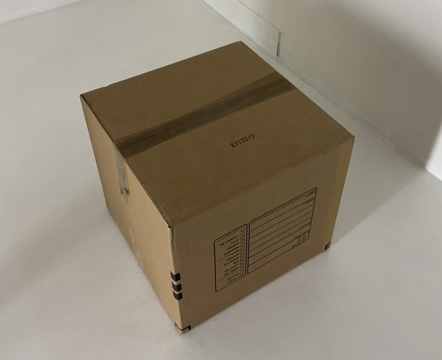
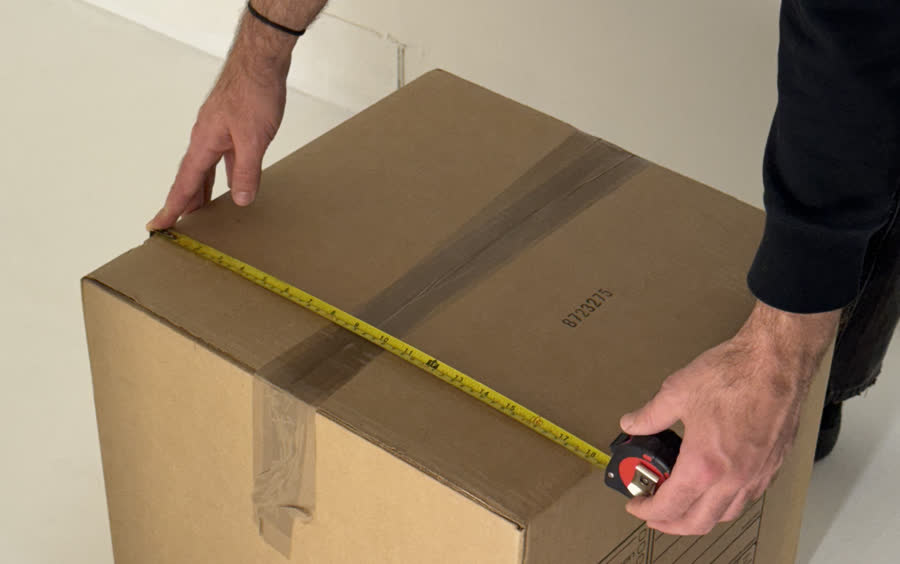
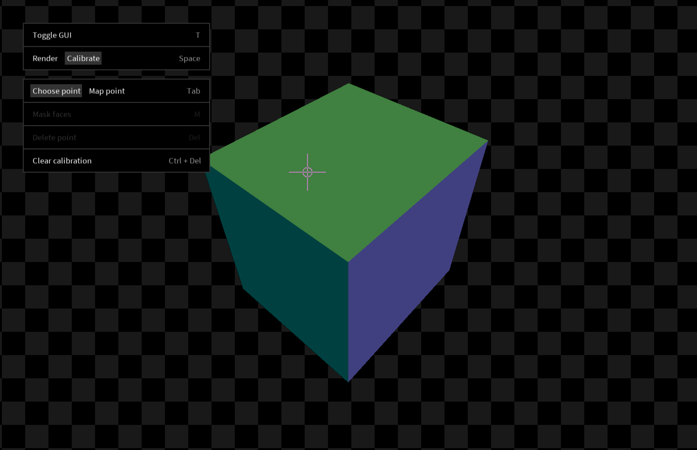
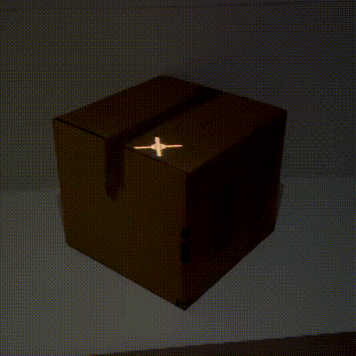
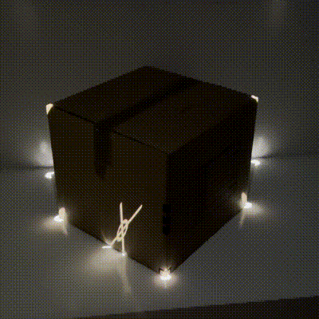
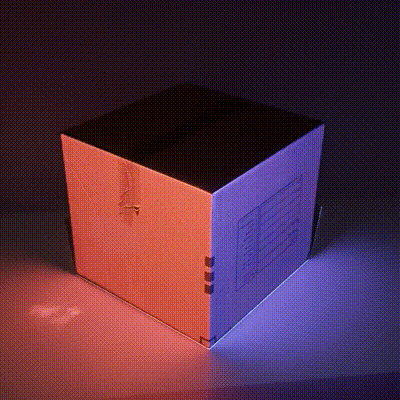

Getting started
Installation
- Download and install Processing.
- Click here to install Shape Mapper v0.1.4. (Requires at least Processing 4.2).
Find an object
A box is an easy thing to model, so look around your space for something box shaped. We'll be using a cardboard box as an example.

Measure the size of the physical box. Our example box is 18.5" × 18.5" × 16.5" (this is relevant to our code in the next step).

Write the Processing sketch
-
Create a new Processing sketch and import the Shape Mapper library:
-
Create two top level variables to store the Shape Mapper library object and the shape that we'll be mapping:
-
Add a
setupfunction and initializing the screen size. it is recommended to usefullScreen(). It is required to use theP3Drender mode; Shape Mapper will not work without it. -
In our
setupfunction, initialize our shape. The size of ourPShapebox needs to be proportional to the measurements we took of the physical cardboard box (18.5" × 18.5" × 16.5"). We're modeling the physical object in virtual space by ensuring our virtual dimensions are proportional to our physical dimensions. -
Lastly in our
setupfunction, initialize the Shape Mapper library, passing the shape we just created: -
Write a draw function that renders the outline of the box. To map our rendered geometry to the physical box, we'll need to sandwich the drawing code within the
mapper.beginMapping()andmapper.endMapping()lines. -
Putting it all together, our sketch should look like this:
import spacefiller.shapemapper.ShapeMapper; ShapeMapper mapper; PShape shape; void setup() { fullScreen(P3D); // The size of our box is proportional to the physical measurements we made int scale = 10; shape = createShape(BOX, 18.5 * scale, 18.5 * scale, 16.5 * scale); mapper = new ShapeMapper(this, shape); } void draw() { background(0); mapper.beginMapping(); // Disable the default shape style so that we can choose fill and stroke // manually in the code shape.disableStyle(); // Draw the shape fill(0); stroke(255); shape(shape); mapper.endMapping(); }
Calibrate the projection mapping
Now that we have the code for the sketch set up, we can calibrate our mapping.
- Connect your computer to a projector and point the projector at the object you're mapping.
-
Run the sketch. The Shape Mapper GUI will appear in the upper left hand portion of the screen. (Note: you can hide this GUI by hitting
T, or in the code usingmapper.hideGui().)
-
Hit
Spaceto switch fromRendermode toCalibratemode. This will reveal the calibration GUI.
-
Your 3D model will appear in the center of the screen. You can navigate the model with the following controls:
- Click + drag to orbit
- Command + click + drag to pan
- Scroll to zoom in and out
- Click a point on your model to select it.
- Hit
Tabto switch to mapping mode. -
Look at your object in physical space and move your mouse so that the crosshairs are centered on the corresponding vertex of the physical object. Click to create a point in the projected space.

-
Hit
Tabto switch back to point selection. Choose another point and repeat the process. -
After mapping 6 points, a full calibration will be automatically estimated. Press
Spaceso switch back toRendermode. In physical space, your object should now be successfully mapped.
Tips & tricks
- You can adjust mapped points after placing them, or add more points, to refine your calibration.
- If your model does not accurately represent your physical object, then the mapping will be misaligned.
- Press
Deleteto delete a selected point. - To completely clear all calibrations, press
Ctrl + Delete.
Creating animations
Shape Mapper does not offer any included animation or visual effect functionality; that is up for you to create with Processing code! One quick way to animate your mapped object is to use pointLight(...):
void draw() {
background(0);
mapper.beginMapping();
// Add two rotating point lights to color the faces
pointLight(
255, 0, 0,
sin(frameCount / 10f) * 400,
cos(frameCount / 10f) * 400,
sin(frameCount / 10f) * 400);
pointLight(
0, 0, 255,
cos(frameCount / 10f) * 400,
sin(frameCount / 10f) * 400,
sin(frameCount / 10f) * 400);
shape(shape);
mapper.endMapping();
}

A more advanced technique is to use shaders to create animations. This is out of scope for this tutorial, but some examples of this technique are shown below.